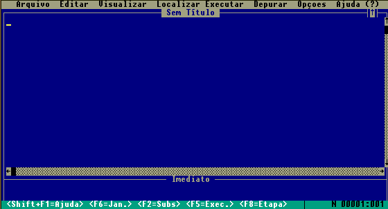
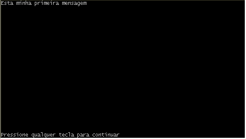
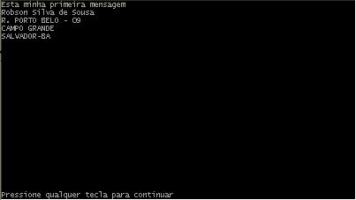

Estudando o Qbasic
Aula 1
O Qbasic(Quick Basic) é uma das muitas versões da liguagem de programação BASIC(Beginners All-Purpose Symbolic Instruction Code - Código de Instruções simbólicas Para Todos os Principiantes).
Para saber se o seu computador tem o Qbasic, vá em Iniciar/Localizar/Arquivos ou Pastas e digite Qbasic ou QuickBasic.
Se você não encontrou o Qbasic em seu computador, poderá baixá-lo na nossa seção de Downloads.
Após localizar o arquivo dê um duplo-clique para ativá-lo, surgirá a seguinte tela:

Para sair do Qbasic vá até "Arquivo" opção "Sair" ou pressione Alt+A e depois tecle r.
Vimos no curso de Lógica de Programação que um programa é essencialmente dividido em Entrada, Processamento e Saída de Dados, e além disto o procedimento correto para a elaboração de um programa é primeiramente o desenvolvimento da sua lógica através do uso de Fluxogramas ou Algoritmos. No entanto neste primeiro contato faremos uma introdução sem este rigor, tendo em vista que o procedimento é muito simples.
Para exibir mensagens no vídeo o Qbasic utiliza o comando PRINT.
Ative o Qbasic. Observe que sua janela possui duas partes: "Sem Título" e "Imediato".
Com o cursor na janela "Sem Título", digite o seguinte código:
PRINT "Esta é a minha primeira mensagem"

Outro exemplo:
Obs.:Tecle Enter ao final de cada linha
Print "Robson Silva de Sousa"
Print "R. Porto Branco -09"
Print "Campo Grande"
Print "Salvador - Ba"
Execute o programa acima com Shif+F5 ou menu Executar/Iniciar.
O resultado é mostrado abaixo.

Observe que cada vez que você executa um novo código, a mensagem anterior ainda é exibida. Quando queremos limpar a área de exibição utilizamos o comando CLS (abreviatura de "Clear Screem" - Limpar Tela).
Modifique o código anterior para:
Cls
Print "Robson Silva de Sousa"
Print "R. Porto Branco -09"
Print "Campo Grande"
Print "Salvador - Ba"
Execute o programa acima com Shif+F5 ou menu Executar/Iniciar.
Veja que somente os dados após o Cls são exibidos.
Dica: Para facilitar a digitação, você pode substituir o comando Print pela "?".
Print "Robson Silva de Sousa"
ou
? "Robson Silva de Sousa"
Observação: A mensagem entre as aspas será exibida exatamente como você digitar, o computador apenas reproduz a informação.